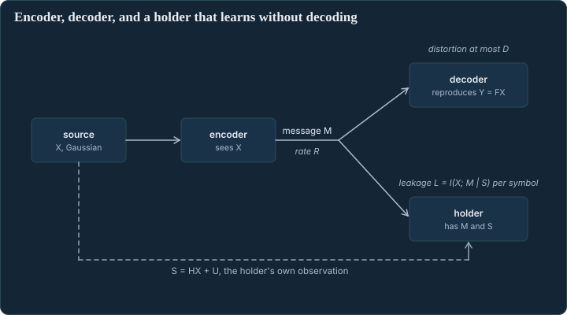

Chapter 24 — The Holder: Rate, Leakage, and Distortion
Chapter 7 priced one consumer and summarized four papers written for the IEEE Transactions on Information Theory, the rate-leakage-distortion (RLD) series, in which a second party holds the description and learns from it without decoding it.
Class of everything below. Every result in this chapter is [exploratory]
(ledger rows RLD-I to RLD-IV.4). The ledger gives the reason: each row has a written
proof and fresh-context model audits (verification incidents VI-16 to VI-22, later
VI-26, VI-27 and VI-29), and the ledger records the author’s statement of 2026-11-18
that the author has read all the proofs of the four papers. No row has a sealed
registration. The numerical checks had their criteria fixed in the scripts before
they ran but were not sealed, so they cannot carry a row at [predicted] or
[demonstrated], and [proved] also needs a constants and slack table, which the
papers do not yet have. Promotion is to [proved] once such a table is attached to a
row’s theorem, or to [predicted] once a registration seals a numerical consequence
before it is run.
Status of the papers. Paper I (paper/tit-rate-leakage) is recorded as submitted
and under review. Paper II (paper/tit-stationary) was submitted on 2026-11-18 as
manuscript IT-26-1961 (its README.md). Papers III (paper/tit-beyond-stationary)
and IV (paper/tit-unstable-ergodic) are drafts, not submitted (their README.md
files).
The setting: three parties and two costs
An encoder observes independent copies of a Gaussian vector $X\in\mathbb{R}^p$ with covariance $\Sigma\succ0$. A decoder receives a message $M$ and reproduces a linear part $Y=FX$ under a weighted quadratic distortion,
$$ \mathbb{E}\big[(Y-\hat Y)^{\mathsf T}W(Y-\hat Y)\big]\le D,\qquad Q:=F^{\mathsf T}WF\succeq0,\qquad D_{\max}:=\operatorname{tr}(Q\Sigma). $$
The matrix $Q$ is the series’ fixed weight. The third party, the holder, has the message and its own observation
$$ S=HX+U,\qquad U\sim\mathcal N(0,\Sigma_U),\ \Sigma_U\succ0,\qquad J:=H^{\mathsf T}\Sigma_U^{-1}H,\qquad \Sigma_{X\mid S}=(\Sigma^{-1}+J)^{-1}, $$
and reconstructs nothing. The decoder has no side information, so this is not the arrangement of Wyner and Ziv. A code of blocklength $n$ has rate $R_n=\tfrac1n\log\lvert\mathcal M_n\rvert$ and leakage
$$ L_n=\tfrac1nH(M\mid S^n)=\tfrac1nI(X^n;M\mid S^n), $$
whose single-letter form is the conditional information $I(X;\hat X\mid S)$ of a description $\hat X$ formed without $S$.
The leakage coordinate is not new. Conditional leakage is the quantity of secure source coding. Paper I attributes the single-letter region of rate, distortion and equivocation to Villard and Piantanida (2013, their Theorem 3), and the minimum leakage for vector Gaussian sources at unconstrained rate, under a matrix distortion on the whole source, to Ekrem and Ulukus (2013), who left the joint region open. Xu, Chen, Chen and Jin later characterized the rate-distortion-equivocation function as a matrix program. The leakage endpoint is Steinberg’s common-reconstruction functional. Paper I states as its contribution the structure of the region under a trace-type distortion on part of the source.
Gaussian descriptions exhaust the region and are indexed by their error covariance $\Delta$, with $0\prec\Delta\preceq\Sigma$ and $\operatorname{tr}(Q\Delta)\le D$:
$$ r(\Delta)=\tfrac12\log\frac{\det\Sigma}{\det\Delta},\qquad \ell(\Delta)=\tfrac12\log\frac{\det\Sigma_{X\mid S}}{\det(\Delta^{-1}+J)^{-1}} . $$
Paper I’s coding theorem (its Theorem 3) states that for $0
Under a matrix distortion on the whole source one description minimizes both costs, as the bounds of Ekrem and Ulukus imply. A trace constraint leaves the encoder a choice among error covariances, and that choice is the trade-off.

Figure 24.1. The three parties of the rate-leakage-distortion series. The encoder sees the source and writes a message. The decoder has the message only and must reproduce a linear part of the source within distortion D. The holder has the message and its own noisy observation S of the source, and reconstructs nothing. The rate counts the message. The leakage counts what the message tells the holder beyond S.
Paper I: reverse water-filling on a tilted weight
Both costs are strictly convex in $\Delta$, so each frontier point is the unique minimizer of $\alpha r+(1-\alpha)\ell$ for a weight $\alpha\in[0,1]$. Whiten by the source,
$$ E=\Sigma^{-1/2}\Delta\Sigma^{-1/2},\qquad \tilde Q=\Sigma^{1/2}Q\Sigma^{1/2},\qquad \tilde H=H\Sigma^{1/2}, $$
and for a symmetric $A\succeq0$ with eigenpairs $(\lambda_i,e_i)$ let $\Phi(A)=\sum_i\min\{1,1/\lambda_i\}\,e_ie_i^{\mathsf T}$, reverse water-filling at level one. (The paper writes $T$ for the source and $X$ for the whitened error covariance.)
Theorem (paper I, Theorem 7). For $\alpha\in[0,1]$ and $0 $$
E=\Phi\big(\tilde A(E)\big),\qquad
\tilde A(E)=2\nu\,\tilde Q+(1-\alpha)\,\tilde H^{\mathsf T}\big(\tilde HE\tilde H^{\mathsf T}+\Sigma_U\big)^{-1}\tilde H,
$$ for some $\nu>0$ VI-27 found no false step here and records the theorem as netted by independent
programs, and the check scripts as exiting with status zero on failure. The Lean
build record The direction turns with the budget. Write $\delta=D_{\max}-D$ for the reduction
in distortion the description must buy, and $A(\delta)=\Sigma Q\Sigma-\delta\Sigma$. A
one-dimensional description $b^{\mathsf T}X+N$, with $N$ independent Gaussian noise,
has least leakage $$
L_{\mathrm{1d}}(D)=\tfrac12\log\Big(1+\frac{\delta}{\mu_{\max}(\delta)}\Big),
$$ with $\mu_{\max}(\delta)$ the largest root of
$\det\big(A(\delta)-\mu\Sigma_{X\mid S}\big)=0$, attained at a generalized
eigenvector $b(\delta)$ (Theorem 16(a)). Theorem 20 states: if $\mu_{\max}(\delta)$
is simple and positive on an open interval, then $b(\delta)$ spans one line
throughout if and only if some $b_0=b(\delta_0)$ satisfies $$
Q\Sigma b_0=\lambda b_0\quad\text{and}\quad J\Sigma b_0=\varsigma b_0,\qquad \lambda>0,\ \varsigma\ge0,
$$ that is, $b_0$ is a common generalized eigenvector of the two parties’ pencils;
otherwise $b(\delta)$ is constant on no open subinterval This statement was narrowed. The ledger row first read as a claim about frontier
descriptions in general; VI-27 recorded that as an overclaim, and the row was
narrowed on 2026-11-20. Theorem 20 is about the best one-dimensional description,
which is leakage-optimal only where the certificate of Theorem 16(b) holds. VI-27
records that Theorem 20 was netted only weakly, and the harness then written for it
contained an error of the assistant’s (VI-29, round 1), corrected in a second round.
Paper I is under review, so VI-27’s items went to the owner unapplied, and the ledger
leaves the row’s class to the owner, from the paper’s own verification record, which
was not reviewed for the row. Let the source be a stationary Gaussian process with a continuous spectral density
$\Sigma(\omega)\succ0$, and let the holder observe $S_t=\sum_kH_kX_{t-k}+U_t$ with
frequency response $H(\omega)$ and a continuous noise spectrum
$\Sigma_U(\omega)\succ0$. With $\tilde Q(\omega)$, $\tilde H(\omega)$ the whitened
quantities and $\ell_\omega$ the leakage at each frequency, the spectral cost is $$
V(\alpha,D)=\min\Big\{\int_{-\pi}^{\pi}\big[\alpha r+(1-\alpha)\ell_\omega\big]\big(E(\omega)\big)\,\frac{d\omega}{2\pi}:\
\int_{-\pi}^{\pi}\operatorname{tr}\big(\tilde Q(\omega)E(\omega)\big)\,\frac{d\omega}{2\pi}\le D\Big\},
$$ attained by the field that solves paper I’s fixed point at every frequency under
one level $\nu$, the only thing the frequencies share. The spectral region is the
set of $(R,L)$ with $\alpha R+(1-\alpha)L\ge V(\alpha,D)$ for every $\alpha$. The claim is that the spectral region is the operational region, with deterministic
encoders VI-16 (fresh-context agents, 2026-11-13 to 15) found no error that invalidates a
theorem and fixed gaps, among them that the closing argument (achievable region
equals spectral region) did not follow as first written. The executed notebook
reports 69 PASS and 0 FAIL, on criteria in the scripts, unsealed. The Lean record ( Slowly varying sources. For a Gaussian source that is locally stationary with
local spectrum $\Sigma(u,\omega)$ (the paper’s conditions L1 to L3), a fixed weight
and a fixed memoryless holder in white noise, the region is water-filling over the time-frequency plane: the program above with a
double integral over $u\in[0,1]$ and $\omega$, under one level, with deterministic
encoders Cyclostationary sources. For period $q$, stack one period into a vector; the
stacked process is stationary, and $$
V_{\mathrm{cs}}(\alpha,D)=\tfrac1q\,\tilde V(\alpha,qD),
$$ with $\tilde V$ paper II’s spectral cost of the stacked process Sources that are not Gaussian. For a memoryless source, with $V_{\mathrm G}$ the
cost of the Gaussian source with the same second moments and $\vartheta(X)$,
$\vartheta(X\mid S)$ the relative entropies of the source, and of its conditional law
given $S$, from the Gaussian laws with the same covariances, $$
V_{\mathrm G}(\alpha,D)-\alpha\,\vartheta(X)-(1-\alpha)\,\vartheta(X\mid S)\ \le\ V(\alpha,D)\ \le\ V_{\mathrm G}(\alpha,D)
$$ The covariance-mixture inequality (Corollary 6). For $K_1,\dots,K_C\succ0$,
weights $\lambda_c>0$ summing to one, and $\bar K=\sum_c\lambda_cK_c$, $$
V_{\mathrm G}(\alpha,D;\bar K)\ \ge\ \min\Big\{\sum_c\lambda_c\,V_{\mathrm G}(\alpha,D_c;K_c):\ \sum_c\lambda_cD_c\le D\Big\}
$$ Scalar unstable sources. For a scalar autoregressive source with poles $\rho_i$
off the unit circle, a scalar holder gain $H$, and
$\rho_\star=\sum_{\lvert\rho_i\rvert>1}\log\lvert\rho_i\rvert$, $$
\mathcal A(D)=\big(\rho_\star,\ \rho_\star\mathbf 1_{\{H=0\}}\big)+\mathcal R_f(D),
$$ where $\mathcal A(D)$ is the achievable region and $\mathcal R_f(D)$ the spectral
region of the stationary source with the reflected spectrum $f$ For all five rows: VI-17 (fresh-context agents, 2026-11-15 and 16) found no error in
the mathematics, one false sentence (which stationary processes satisfy the
definition), one unproved remark that was softened, and gaps that were fixed. The
In paper IV the decoder reproduces the whole source. Hidden poles. For a vector autoregressive source with no pole on the unit circle
and a holder whose filter has finite memory or is rational and stable, $$
\mathcal A(D)=\big(\rho_\star,\ \rho_{\mathrm{hid}}\big)+\mathcal R_f(D),\qquad
\rho_{\mathrm{hid}}=\sum_{\lvert\rho\rvert>1,\ \rho\ \text{hidden}}\log\lvert\rho\rvert,
$$ where a pole is hidden when its mode is unobservable by the holder in the sense of
Kalman (the holder’s filter cancels it), and $f$ is the spectral density of the
stationary counterpart Poles on the unit circle. For a scalar source with poles anywhere and a scalar
holder gain, the region at every $D>0$ is the quadrant above $$
\big(\rho_\star+r_f(D),\ \ \rho_\star\mathbf 1_{\{H=0\}}+\ell_f(D)\big),
$$ with $r_f$, $\ell_f$ the reverse water-filling rate and leakage on $f$; poles on the
circle cost nothing Incommensurate sampling. For a scalar source with uniformly bounded window
covariances whose eigenvalue distributions converge to a measure $\mu$, and a scalar
holder in white noise, the region is the quadrant above $(r_\mu(D),\ell_\mu(D))$,
with water level $\theta$: $$
r_\mu=\int\tfrac12\log^+\frac\lambda\theta\,d\mu,\qquad
\ell_\mu=\int_{\lambda>\theta}\tfrac12\log\frac{1/\theta+J}{1/\lambda+J}\,d\mu,\qquad
Q\int\min\{\lambda,\theta\}\,d\mu=D .
$$ For a cyclostationary process with a continuous correlation of finite range, sampled
at a rate incommensurate with its period, the limit exists and does not depend on
the sampling phase Ergodically driven vector sources. For a vector source driven by a homeomorphism
all of whose powers are uniquely ergodic, with continuous finite-range correlations,
covariances bounded below, and a holder of finite memory, the region is the limit of
programs over independent blocks, with error $O(1/n)$, the same for every starting
phase The weight is an input, and it is not the consumer’s read metric. The consumer’s
geometry is the local read metric $P_C(x)$ of Chapter 5; the series’ $Q$ is a fixed
per-symbol weight. The turning of the optimal description with the budget is a
property of the description, which depends on $Q$, $\Sigma$, the holder and $D$
together; it does not mean the consumer’s metric has changed. Replacing $P_C(x)$ by a
constant $Q$ is the bridge of Chapter 5. The weight is assumed known. Chapter 10 recovers the read subspace, not the
weights within it. Composing recovery with these coding theorems, and charging for
the probing, is the keystone T1 of Chapter 17. Leakage as reset work is a further claim. The leakage here is the conditional
information $I(X;\hat X\mid S)$. Reading it as the ideal work to reset a record
against the holder’s knowledge needs a physical memory and reset model, and belongs
to Chapter 25.[exploratory] (ledger row RLD-I; no registration). The second term
is the tilt: the information the holder’s observation adds to the description. It is
evaluated at the solution, so the statement is a fixed point and not a closed form.
At $\alpha=1$ the tilt vanishes and the theorem is classical reverse water-filling on
$\tilde Q$.lean-tilted-complete-2026-10-07.txt states a sorry count of zero
and that the listed theorems, among them tilted_waterfilling_complete, depend only
on the three standard axioms. It does not say what those theorems assert, and I
report no more than that.[exploratory] (ledger row
RLD-I). With no holder ($J=0$) the direction is fixed at every budget, as in
classical reverse water-filling.Paper II: stationary sources and the spectral region
[exploratory] (ledger row RLD-II; no registration). Holders covered (its
README.md): a memoryless map in white noise (Theorem 16); a filter of finite length in colored noise (Theorem 20); every filter with real taps
and a continuous frequency response, of finite or infinite memory (Theorem 22); and
a holder with its whole observation process (Theorem 23). Excluded: band-limited
sources and a holder that sees a component without noise.lean-spectral-2026-11-13.txt: 21 theorems,
sorry count 0) covers, per the README.md, algebraic steps only. On prior work,
the paper cites conditional rate-distortion theory with memory to Gray (1973) and
Leiner and Gray, and the README.md records that the first window bound at
$\alpha=1$ is the Wyner-Ziv (1971) memory bound applied to blocks, not a new one.Paper III: four branches and the inequality that joins them
[exploratory] (ledger row RLD-III.1). The achievability has no rate in the
blocklength. The closest prior result at the rate-only weight is Hammerich (2016),
of which the README.md says only the abstract was read.[exploratory]
(ledger row RLD-III.2). The stacking is classical (Gladyshev; Kipnis, Goldsmith and
Eldar); the ledger records the leakage as new.[exploratory] (ledger row RLD-III.3). The upper bound says the Gaussian region is
achievable. The lower bound needs additive holder noise independent of the source,
and is tight as $D\to0$ only when the whole source is reproduced ($Q\succ0$).[exploratory] (ledger row RLD-III.4). A Gaussian source whose covariance is an
average costs at least as much, at every weight, as a source that switches between
the covariances. This is what shows that averaging a spectrum over time, or over the
phase of a cycle, never lowers the cost. The paper’s introduction uses it to join
its branches: in each, the model that forgets structure is conservative.[exploratory]
(ledger row RLD-III.5). The rate term is classical (Gray; Hashimoto and Arimoto);
the ledger records the leakage as new. In this scalar model there is no trade-off.README.md records two post-hoc changes: verify_ls.py passed only after a
criterion was changed following a failed first run, and verify_unstable.py failed its first full run and had its criteria
changed after that run had been seen. The Lean record (lean-beyond-2026-11-16.txt:
15 theorems, sorry count 0) formalizes no coding theorem (README.md).Paper IV: unstable poles, the unit circle, and sources that never repeat
[exploratory] (ledger row RLD-IV.1). An unstable pole is paid for once, in rate, when the holder can see it,
and again in leakage when it cannot. Priority for the rate part is not claimed:
Toms and Berger (1971) was read only as an abstract. Losses on this row: VI-21 found
an error in a proof step (a coupling’s seed is not independent of the remainder,
as the proof said; the conclusion stands), and VI-20 found two false framing claims,
one of them “every truncation of a filter that cancels a pole sees the pole”, with a counterexample. In
the first check script one criterion failed (a cost changed by up to 1.9e-6 bits
against a bar of 1e-6), and its criteria were written after exploratory probes.[exploratory] (ledger row RLD-IV.2; verify_unit_circle.json,
30 of 30). VI-20 found a gap in the achievability (a constructed case had a 1.05-bit
overhead), since fixed.[exploratory] (ledger row RLD-IV.3). The ledger records this as
a proof of the conjecture of Tan, Dabora and Poor (ISIT 2024, Remark 1), restated as
open in an April 2026 seminar, with the caveat that their 2026 journal article was
read only as an abstract; the README.md says it is not known whether that article
addresses the conjecture. The finite-range hypothesis had been dropped from the
abstract, the introduction and the ledger row, and was restored on 2026-11-20
(VI-26). VI-26 found no false step, and found that the harness’s phase-independence
check had no power: runs at rational rates passed it too.[exploratory] (ledger row RLD-IV.4). The memoryless check failed all six of
its checks on absolute tolerances on its first run; a follow-up with criteria
written before it ran passed nine of nine. VI-19 found gaps, since fixed, and an
appendix claim false (“phase spread at most a quarter”; the recorded ratio is
0.2508). The folder holds no
Lean build record for paper IV.What the series takes as given
What is still open
[proved], or a sealed registration of a numerical consequence for [predicted].